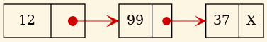
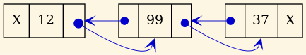
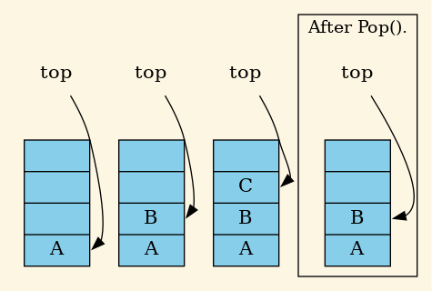
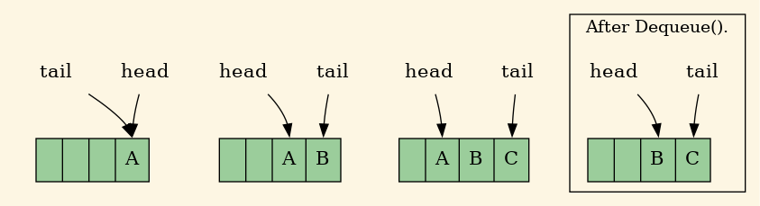

Listas, Pilas, Colas.
Created: 2025-02-04 mar 00:33
C++.Cada TAD será una clase, p.e.:
typedef char Element; // Hasta que veamos genericidad
// usaremos estos typedef.
typedef int Position;
class List {
public:
void insert (Element x, Position i); // Dónde está el primer
// parámetro 'L'?
...
};
List l;
l.insert ('a', 1);
Puede ser una serie de elementos en la cual cada uno sabe sólo cuál es su siguiente (simplemente enlazada ):

Figura 1: Lista simplemente enlazada.
O también su anterior (doblemente enlazada ):

Figura 2: Lista doblemente enlazada.
Ejemplo, apilamos A, B, C y desapilamos.

Figura 3: Apilar.
¿Sería válida esta implementación de la clase Pila?:
class Stack : public List {
public:
void push (Element x);
...
};
List* myList = new Stack();
myList->insert(0, value); // ¿Permitido? No debería en una pila.
¿Y esta?:
#include "list.h"
class Stack : private List {
public:
void push (Element x);
...
};
¿O esta otra?:
#include "list.h"
class Stack {
public:
void push (Element x);
...
private:
List _l;
};
Empty (Q) : Devuelve true si la cola no tiene elementos.
Por completitud, al dato que menos tiempo lleva en la cola se
le llama cola (del inglés tail ).
Ejemplo, encolamos A, B, C y desencolamos.

Figura 4: Encolar.
¿Sería válida esta implementación de la clase Cola?:
class Queue : public List { // Herencia pública.
public:
void enqueue (Element x);
...
};
¿Y esta?:
#include "list.h"
class Queue : private List { // Herencia privada
public:
void enqueue (Element x);
...
};
¿O esta otra?:
#include "list.h"
class Queue {
public:
void enqueue (Element x);
...
private:
List _l; // Composición
};